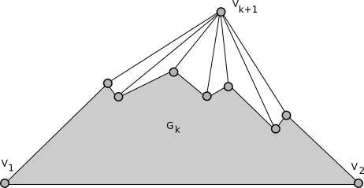

template <typename Graph, typename PlanarEmbedding, typename OutputIterator, typename VertexIndexMap> void planar_canonical_ordering(const Graph& g, PlanarEmbedding embedding, OutputIterator ordering, VertexIndexMap vm);
A planar canonical ordering is an ordering v1, v2, ..., vn of the vertices of a maximal planar graph having the property that, for each k, 3 <= k < n, the graph induced by v1, v2, ..., vk
A planar canonical ordering exists for every maximal planar graph with at least 2 vertices. planar_canonical_ordering expects the input graph to have at least 2 vertices.
The planar canonical ordering is used as an input in some planar graph drawing algorithms, particularly those that create a straight line embedding. de Fraysseix, Pach, and Pollack [72] first proved the existence of such an ordering and showed how to compute one in time O(n) on a maximal planar graph with n vertices.
boost/graph/planar_canonical_ordering.hpp
An undirected graph. The graph type must be a model of VertexAndEdgeListGraph. The graph must:IN: PlanarEmbedding
- Be maximal planar.
- Have at least two vertices.
A model of PlanarEmbedding.IN: OutputIterator
An OutputIterator with value_type equal to graph_traits<Graph>::vertex_descriptor. The canonical ordering will be written to this iterator.IN: VertexIndexMap vm
A Readable Property Map that maps vertices from g to distinct integers in the range [0, num_vertices(g) )
Default: get(vertex_index,g)
examples/canonical_ordering.cpp
Planar Graphs in the Boost Graph Library